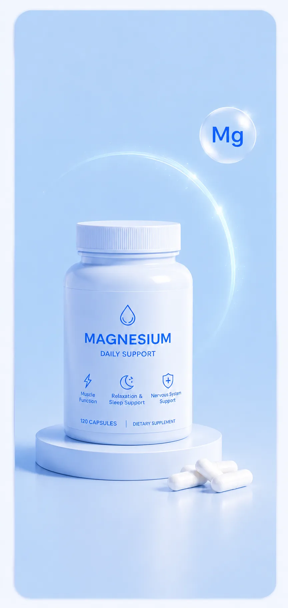

What is magnesium, exactly?
Magnesium is an essential mineral — meaning your body cannot produce it on its own. You need to get it through food or supplementation. Yet it is one of the most common deficiencies among adults worldwide.
The mineral is involved in more than 300 enzymatic processes in the body. From energy production to DNA repair, from muscle function to neurotransmitters in the brain. It is not a nice-to-have — it is a fundamental requirement.
The problem? Modern diets — processed food, low vegetable intake, few nuts or seeds — consistently fall short on magnesium. On top of that, stress, alcohol, intense exercise and caffeine all further deplete magnesium stores. We see this pattern repeatedly: people who try to eat well but still come up short.
Magnesium is not a trend supplement. It is a mineral that a large portion of the adult population is chronically deficient in — with measurable consequences for sleep, energy, stress resilience and muscle function.
What does magnesium do for your body?
Magnesium is not a one-trick pony. It works across multiple systems simultaneously. Below are the most relevant functions — not as a marketing list, but with the context of why each one matters.
Energy production (ATP)
Every cell in your body uses ATP as fuel. ATP is only biologically active when bound to a magnesium ion. Without sufficient magnesium, your body cannot produce or use energy efficiently. Fatigue without a clear cause is one of the first signs of a deficiency.
Muscle function and recovery
Magnesium is essential for both muscle contraction and relaxation. Calcium causes a muscle to contract — magnesium is what allows it to release again. With a deficiency: cramps, muscle stiffness and slower recovery. We consistently advise athletes to check magnesium first when recovery stalls.
Nervous system and stress response
Magnesium modulates the sympathetic nervous system — the system that drives the fight-or-flight response. It acts as a natural NMDA receptor blocker, reducing the excitability of nerve cells. Less magnesium = overactive nervous system = greater stress sensitivity.
Blood sugar regulation
Magnesium plays a role in insulin function and cellular glucose uptake. Low magnesium levels are strongly associated with insulin resistance and an elevated risk of type 2 diabetes.
Heart health
The heart is a muscle — and needs a constant supply of magnesium for a regular rhythm. Magnesium helps regulate blood pressure and reduces the risk of cardiac arrhythmias. In clinical settings, intravenous magnesium is used to treat certain arrhythmias.
The benefits people forget about
Magnesium is known for sleep and cramps. But the effects go further. These are the areas where people tend to be most surprised.
Sleep quality
Magnesium activates the parasympathetic nervous system and raises GABA levels — an inhibitory neurotransmitter that helps the brain wind down. Multiple studies show that magnesium supplementation significantly improves sleep quality, time to fall asleep and deep sleep, particularly in people over 50.
Anxiety and mood
Magnesium deficiency is linked to elevated anxiety and depressive symptoms. Magnesium regulates both serotonin and dopamine — two neurotransmitters that directly influence mood. A 2017 meta-analysis concluded that supplementation supports anxiety reduction, particularly in people with mild to moderate anxiety levels.
Migraine prevention
This is an underappreciated use. People who experience frequent migraines show on average lower blood magnesium levels. The American Migraine Foundation recognises magnesium as a possible preventive treatment. Studies show that 600 mg of magnesium oxide daily can significantly reduce the frequency of attacks.
Bone density
Calcium gets all the attention when it comes to bones — but magnesium is equally important. It regulates calcium uptake into bone cells and activates vitamin D. Without sufficient magnesium, vitamin D is less effective.
Many people who tell us they sleep badly, feel stressed and wake up tired turn out to be chronically low on magnesium on closer inspection. It is not always the cause — but it is a contributing factor more often than people realise.
Which form works best?
Not all magnesium is equal. The form determines how well it is absorbed and what it primarily does. This is the biggest misconception in magnesium supplementation: people buy the cheapest form and wonder why they feel nothing.
Bound to glycine — an amino acid with its own calming effect. High bioavailability, gentle on the stomach. The first choice for most people.
The only form that can significantly cross the blood-brain barrier. Developed by MIT researchers. More expensive, but unique for cognitive support.
Bound to malic acid, which is also involved in energy production. Good for athletes. Take during the day for best effect.
Well absorbed and affordable. Has a mild laxative effect — beneficial for constipation, but be mindful at higher doses.
Low bioavailability (~4%), but contains a lot of elemental magnesium per tablet. Used in migraine research. Not the first choice for daily use.
Bound to taurine, which also has cardioprotective properties. Interesting for people with cardiovascular concerns.
For most people, magnesium glycinate is the best starting point — high bioavailability, good for sleep, gentle on the stomach and well documented. Want cognitive support on top of that? Add L-Threonate. Active athlete? Consider malate during the day.
What does the science say?
Magnesium is one of the best-researched minerals. Below are three robust studies — not the most optimistic outcomes, but the most reliable.
A randomised double-blind trial published in 2012 in the Journal of Research in Medical Sciences examined 46 elderly participants with sleep issues. The group receiving 500 mg of magnesium daily showed significant improvements in time to fall asleep, sleep efficiency and serum melatonin levels compared to placebo. Results were measurable after 8 weeks.
A meta-analysis in Nutrients (2017) analysed 18 studies on the relationship between magnesium and anxiety. Conclusion: supplementation supports anxiety reduction, particularly in people with subclinical anxiety disorders. The effect was strongest in people with a confirmed deficiency — a group that is larger than most people assume.
A meta-analysis in Diabetes Care analysed data from more than 536,000 participants. Every 100 mg increase in daily magnesium intake was associated with a 15% lower risk of type 2 diabetes — mechanistically linked to magnesium's role in insulin signalling at the cellular level.
The evidence for magnesium is strong — and goes well beyond sleep. The effects on insulin sensitivity, anxiety and muscle recovery are well documented. That said, results are strongest in people with an existing deficiency. And that turns out to be a large group.
How and when to take it
The right timing and dosage make a significant difference. Here is what the evidence and practice both show:
| Goal | Recommended form | Dosage | Timing |
|---|---|---|---|
| Sleep & relaxation | Glycinate | 200–400 mg | 30–60 min before bed |
| Energy & sport | Malate | 300–400 mg | Morning or pre-workout |
| Cognition | L-Threonate | 1,500–2,000 mg* | Split across the day |
| Migraine prevention | Oxide or Citrate | 400–600 mg | Consistently daily |
| General deficiency | Citrate or Glycinate | 200–350 mg | With a meal |
* L-Threonate doses are based on total salt weight. Elemental magnesium content is lower (~144 mg per 2g L-Threonate).
Do not take magnesium at the same time as zinc or calcium in high doses — these minerals compete for the same absorption receptors. Space them out across the day if you take multiple supplements.
What most people get wrong
After years of magnesium becoming mainstream, the same mistakes appear over and over. These are the ones that make the most difference.
Mistake 1: Buying the cheapest form. Magnesium oxide is the most widely sold form because of its low price — but it has a bioavailability of only ~4%. Start with glycinate or citrate instead.
Mistake 2: Stopping too early. Magnesium builds up over weeks, not days. Most benefits for sleep and mood only become measurable after 4–8 weeks of consistent use. People stop too soon and conclude it "doesn't work."
Mistake 3: Taking it at the wrong time. If you take magnesium for sleep and you take it with breakfast, you will miss the effect. The calming effect of glycinate is strongest 30–60 minutes before bed.
Mistake 4: Assuming food is enough. In theory, you can get sufficient magnesium from nuts, seeds and dark leafy greens. In practice, most people eat too little of these — and magnesium concentrations in food have declined over recent decades due to depleted agricultural soils.
Magnesium supplementation works — but only with the right form, at the right time, for long enough. We too often see people who "tried it" based on wrong expectations or the wrong product. Do it properly or don't bother.
The short version
- Magnesium is involved in more than 300 processes in the body — from energy production to brain function and muscle recovery.
- Nearly half of all adults do not get enough magnesium through their diet.
- The best form for most people is magnesium glycinate — high bioavailability, good for sleep, gentle on the stomach.
- For cognitive support, magnesium L-Threonate is the only form that effectively crosses the blood-brain barrier.
- Effects on sleep and mood become measurable after 4–8 weeks of consistent use — not after three days.
- For sleep, take it 30–60 minutes before bed. For energy and sport, take it during the day.
- Cheap magnesium oxide has a bioavailability of ~4% — essentially wasted money.
How Improo can help
Use the Improo supplement tracker (available summer 2026) to log your magnesium intake and track its effects over time. We recommend tracking for at least 8 weeks — sleep quality, energy levels and stress sensitivity — so you can see for yourself what it does. Supplementing without tracking is guesswork. With tracking, you know.
What we'd actually use
These are products that genuinely complement a magnesium routine. We choose based on ingredient quality and manufacturer transparency — not commission rates.

The form we recommend first for most people. High bioavailability, no stomach issues, ideal to take in the evening before bed.
- ✓ Bound to glycine — which also supports sleep on its own
- ✓ No laxative side effects at normal doses
- ✓ Free from unnecessary fillers and artificial additives
- ✓ Widely documented in clinical research
The only magnesium form that effectively crosses the blood-brain barrier. Developed by MIT researchers. More expensive — but there is no alternative when cognition is the goal.
- ✓ Only form with proven access to brain tissue
- ✓ Supports memory, focus and synaptic plasticity
- ✓ Patented Magtein formula — the original from the research
- ✓ Combinable with glycinate for a complete profile
References
-
1Abbasi, B. et al. (2012). The effect of magnesium supplementation on primary insomnia in elderly. Journal of Research in Medical Sciences, 17(12), 1161–1169. PubMed: 23853635
-
2Boyle, N.B. et al. (2017). The Effects of Magnesium Supplementation on Subjective Anxiety and Stress. Nutrients, 9(5), 429. PubMed: 28445426
-
3Fang, M. et al. (2016). Dietary magnesium intake and the risk of type 2 diabetes. Diabetes Care, 39(8), 1405–1412. PubMed: 27372871
-
4DiNicolantonio, J.J. et al. (2018). Subclinical magnesium deficiency: a principal driver of cardiovascular disease. Open Heart, 5(1). PubMed: 29387426
-
5Gröber, U. et al. (2015). Magnesium in Prevention and Therapy. Nutrients, 7(9), 8199–8226. PubMed: 26404370